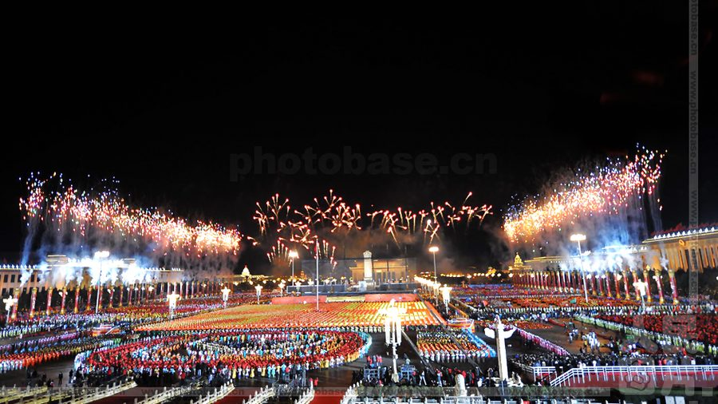

七十年群众游行的流金岁月
从开国大典的万众欢腾，到新时代的缤纷方阵，沿着黄河九曲，在卷中徐徐铺展。旗帜所向，是山河无恙的祈愿；步履所至，是家国安宁的期许。人民对美好生活的向往，始终是这片土地最深的底色，也是这个国家向前的力量。启航，向明日。
三十万群众汇聚天安门广场，工人、农民、学生、士兵并肩而立，腰鼓与秧歌从清晨响到日暮。五星红旗第一次在这里升起，这片土地从此有了自己的国家。人们攥着刚领到的选民证，第一次以主人的身份站在自己的土地上——脸上的笑里，藏着对吃饱穿暖、安居乐业最朴素的期盼。
五十年筚路蓝缕，粮票布票成了记忆，彩电、冰箱、摩托车一件件搬进寻常人家，餐桌上渐渐有了四季以外的滋味。群众自发涌上街头，彩车与腰鼓齐鸣，队伍里七十岁的老人悄悄抹了眼泪——他们见过饿肚子的年月，如今第一次真切地感到，日子真的在一天天变好。
对越自卫反击战的炮声未远，长安街上受阅方阵步伐如铁。群众夹道而立，没有喧哗，只有一次又一次自发的掌声——那是对党中央英明决策最直白的拥护。年轻的战士们目光坚毅、脊背挺直，把保家卫国的决心踏进每一个正步里；他们身后，是刚刚开始过上好日子的亿万百姓。

六十周年高铁驶出第一站，神舟划破长空，互联网拉进千家万户，液晶屏取代了显像管。广场上烟花与灯火同辉，人们举着数码相机记录这一刻，孩子骑在肩头指着天空欢呼。生活不再只是温饱与富足，而是对更广阔天地的向往——那一年，很多人第一次坐上动车，去看了一场原本只在电视里见过的灯火。
三十六万群众走过长安街，彩车旁有快递小哥，有广场舞的阿姨，也有穿着工装的工程师。人们举起手机记录自己的国庆记忆，直播间里刷屏的都是家乡的名字。每个平凡岗位上都在诉说同一个心愿：孩子的学校再好一点，家里的老人再安心一点，明天比今天再好一点。
走进「十五五」的开局之年，屋顶的光伏板、街边的充电桩、掌上的智能助手，正悄悄重塑着寻常日子。群众在剧场里重温 1949 年的热血，散场后仍久久不愿离去；也在清晨的街巷里奔向更值得期待的日子——柴米油盐之外，人们聊的是星空、是远方，是把这样的好日子一直过下去。